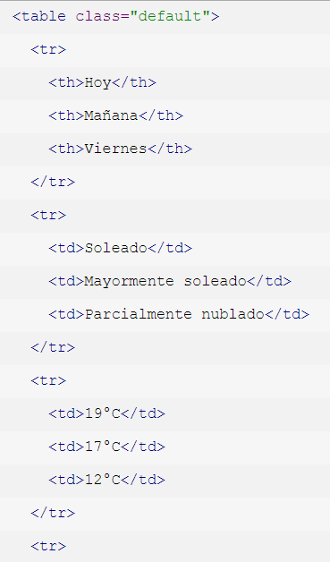
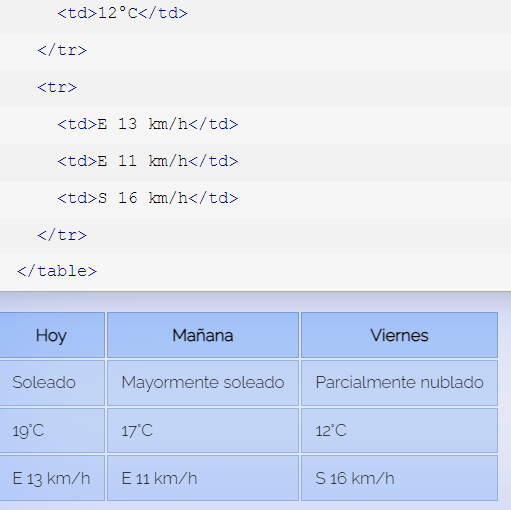

<!DOCTYPE html>
<html lang="en">
<head>
  <meta charset="UTF-8">
  <meta http-equiv="X-UA-Compatible" content="IE=edge">
  <meta name="viewport" content="width=device-width, initial-scale=1.0">
  <title>Document</title>
</head>
<body>
  
</body>
</html>
<center>
  <section id="seccion3" style="color: black;"></section>
  <h1 style="color:rgb(228, 12, 12);"><u>Tablas</u></h1>
<p style="color:rgb(0, 0, 0);"style="text-align:left;">En documentos HTML una tabla puede ser considerada, 
resumidamente, como un grupo de filas donde cada una contiene a un grupo de celdas. 
Esto es conceptualmente distinto a un grupo de columnas que contiene a un grupo de filas, y esta diferencia
tendrá un impacto en la composición y comportamiento de la tabla. Como muchas otras estructuras de HTML,
las tablas son construidas utilizando elementos. En particular, una tabla básica puede ser declarada usando
tres elementos, a saber, table (el contenedor principal), tr (representando a las filas contenedoras de las
celdas) y td (representando a las celdas). 

<h2> Ejemplos de diseños para tablas<h2>
<p><h4><li><u>Celdas de encabezado:</u> Una celda de encabezado es un tipo especial de celda utilizada para organizar y
categorizar otras celdas en la tabla. Dicho esto, es diícil imaginar una tabla donde una celda de encabezado 
no tenga utilidad. Casi cualquier tabla puede beneficiarse de un grupo de celdas de encabezado bien ubicado.
En el siguiente ejemplo, construiremos una tabla para mostrar información acerca del clima en los próximos días.
Aquí, las celdas de encabezado, representadas por el elemento th, son ubicadas en la primera fila de la tabla,
encima de las celdas comunes.</p></h4></li>



<p>Ejemplo de una tabla bsica</p>
<table>
  <tr>
    <th> Company </th>
    <th> Contact </th>
    <th> Country </th>
  </tr>
  <tr>
    <td> Alfreds Futterkiste </td>
    <td> Maria Anders </td>
    <td> Germany </td>
  </tr>
  <tr>
    <td> Centro comercial </td>
    <td> Francisco Chang </td>
    <td> Mexico </td>
  </tr>
</table>
</center>
